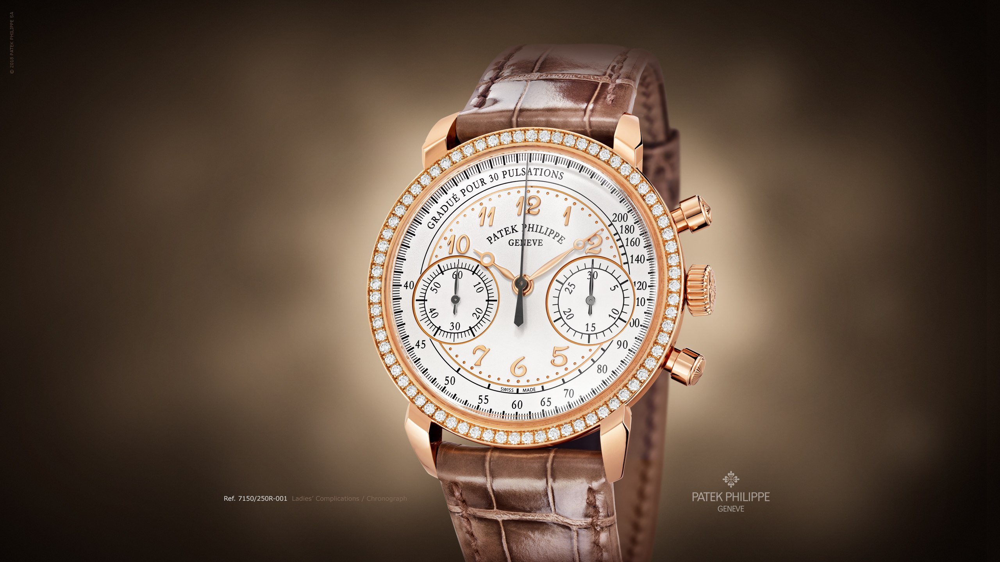

L’Horlogerie, croisade entre art & science
 ::: {.grid} ::: {.g-col-12 .g-col-md-6} Chers lecteurs,
Je dédie cet article aux 2 “F”,
L’Horlogerie, croisade entre art & science
Le temps est un grand mystère, principe variable. Il appartient à une dimension incertaine, qui, plus que tout autre, dépend de la perception qu’on en a. Il possède également un aspect concret marqué par le passage des heures, des jours et des années. L’étude de ce mystère a été un vrai défi pour l’humanité qui, au fil des siècles, s’est toujours efforcée de trouver des limites à tout ce qui fluctuait.
Une montre demande une certaine maîtrise technique. C’est un objet qui a réussi a allié l’art et la science pour créer ce qui aujourd’hui est devenu un objet tant désiré et indispensable.
Par conséquent, une montre revêt non seulement un aspect esthétique mais aussi technique.
D’un côté, les codes stylistiques d’une montre peuvent tout simplement être le reflet d’une époque. Tel est le cas, si on prend l’exemple des pièces d’horlogerie créées durant les années 1920, qui évoquent le style Arts déco. On a vu apparaître des montres aux boîtiers rectangulaires qui ont remis en cause la structure circulaire traditionnelle des montres connues jusqu’à lors. Dans les années 1930 et 1940, la sobriété du style Bahaus a influencé le modèle esthétique des montres. Ce n’est qu’à partir des années 1980, quand à émergé le style Memphis, ludique et coloré, que les Swtach, montres à quartz sont nées.
D’un autre côté, parfois c’est l’histoire qui se cache derrière un modèle en particulier qui influence la forme et le style des montres. Prenons l’exemple de la Tank conçue par Louis Cartier en 1917, qui avait effectivement la forme d’un tank : le Renault FT-17 utilisé durant la Première Guerre mondiale. L’usage de la montre également peut primer dans l’esprit qui guidera la création du garde-temps. Cela peut être illustré par la Reverso dessinée par Jaeger-LeCoultre en 1931. La solution technique du boîtier rabattable, qui répondait à la demande des joueurs de polo, est devenue un modèle esthétique historique.
Par conséquent, pour bien appréhender le concept de l’horlogerie, il faut tenir compte du contexte ou encore de l’époque dans lequel le modèle à été crée - C’est-à-dire l’essence de sa présence dans la société et de son interaction avec la dynamique sociale.
Les Première et Seconde Guerres mondiales ont stimulé la production de montres robustes et fiables. On a vu l’arrivée en masse de chronomètres et de chronographes dans les années 1930 qui répondaient à des besoins mesures précises pour des activités professionnelles telles que les courses automobiles, les vols transatlantiques et les Jeux Olympiques.
Ainsi, l’horlogerie a toujours été un mélange d’esthétique, de technique mais aussi de science. Le pouvoir de compter le temps est étroitement lié à une évolution technique qui est un art en soi, et qui a évolué au fil des siècles pour atteindre les degrés raffinés de la perfection.
Les montres ne sont pas seulement symbole de richesse et de goût, mais aussi des outils capables d’afficher et de communiquer le caractère et le tempérament personnels de ceux qui les portent.
A la conquête du temps
Aujourd’hui, le temps guide nos actions et notre quotidien. C’est grâce au fait de jeter un coup d’oeil à notre poignet ou regarder notre smartphone que l’on parvient à organiser nos journées. Qui va sans dire, nos vies. Néanmoins, il est aussi important de rappeler que posséder un moyen de mesurer le temps n’était qu’à l’apanage d’un petit nombre.
Selon Martin Huber et Alan Banbery, les auteurs de l’histoire de Patek Philippe, le plus ancien modèle de montre-bracelet est celui offert à la reine Elizabeth 1er en 1751 par son maître cavalier favori, Robert Dudley, comte de Leicester.
En 1868, l’atelier Patek Philippe créa pour la comtesse Koscowicz de Hongrie une montre bracelet en or, diamants et émail noir. C’est une des premières montres pour femme dont l’existence est certifiée par l’histoire.
Ces exemples témoignent du caractère uniques et priviligié que revêtaient les montres à cette époque.
Ce n’est qu’au début du XXème siècle que l’on voit apparaître des modèles qui annoncent une nouvelle façon de porter les montres : au poignet. Les toutes premières montres-bracelet connues étaient destinées au femmes. Les hommes préférant les montres de gousset, beaucoup plus volumineuses, mais aussi plus robuste et fiables. Les premières montres-bracelets destinés aux hommes ont été dessinées par Girard-Perregaux e, 1880 pour les officiers de marine allemands.
Le grand élan de développement des montres-bracelets est dû au besoin de connaître vite et facilement l’heure durant les expériences de vol, d’abord dans le domaine civil puis militaire. En 1904, naissent les Santos dessinées par Louis Cartier pour l’avenurier et pilote Albert Santos-Dumont qui fit entrer la montre dans un autre univers. Celui de la mode et du style. C’est de là que par l’explosion du développement de modèles, une évolution technique continue et un produit en croissance constante au cours des ans.
En 1970, l’horlogerie traditionnelle connue ce que l’on appelle la crise du Quartz. En effet, la crise du Quartz n’est autre que la période d’apparition des montres à pile. Ce type de composant permettant de faire fonctionner les montres est originaire de l’asie. Il se différiencie de l’horlogerie traditionnelle par son faible de coût de production. Ce qui entraîne donc des produits à des très compétitifs par rapport à ce que peut proposer l’horlogerie traditionnelle. Certains pensaient que c’était la fin des mouvement mécaniques.
Néanmoins, les grandes marques traditionnelles ont su s’adapter aux changements. Elles ont changé leur stratégie commerciale et marketing. Faisant de la montre un objet non plus de marqueur social mais plutôt de style tout en gardant un gage de qualité.
Dans La théorie de la classe de loisir, l’économiste américain Thorstein Veblen défend que lorsque les entreprises revendiquent du prestige et une réputation de qualité, un prix élevé peut stimuler la demande au lieu de la faire chuter, car leurs produit sont des exclusivités.
Patek Philippe lança une publicité qui annonçait : ” Une Patek Philippe ne se contente pas de vous lire l’heure, elle vous raconte quelque chose sur vous même”. Ou encore à Vacheron Constantin qui compara ses montres à des oeuvres d’art.
Les années 1970 ont été la décennie ou les maisons d’horlogerie ont misé sur le design. C’est l’horloger Gerald Genta qui a créé certains des modèles de montres les plus célèbres telles que la Nautilus de Patek Phillipe, la Royal Oak de chez Audemars Piguet.
Au fil des années, la fabrication des montres a vécu un nouvel élan technique et créatif. Une montre mécanique incarne la magie d’une connaissance technique qui fascine toujours ; elle représente les valeurs intrinsèques et intangibles liés au prestige de posséder un objet convoité pour son design et son mécanisme. Ce n’est pas une question de luxe ou de statut social mais plutôt la recherche de l’excellence créative et culturel. :::